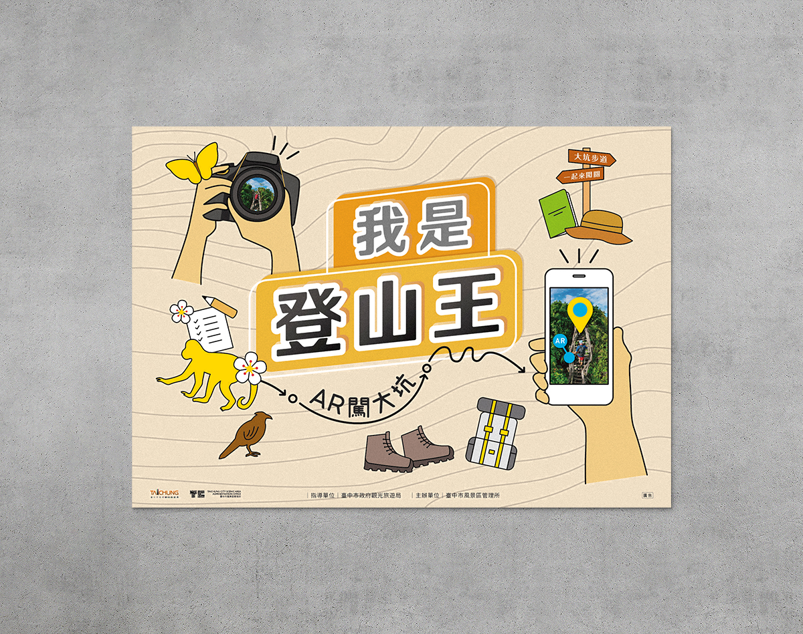

<section class="bg">
    <div class="container">
        <div class="row justify-content-center pt-23 pt-lg-28">
            <h3 class="col-lg-3 h5 font-weight-regular project_title pb-4 pb-lg-10">遊在地 玩臺中</h3>
            <p class="col-lg-8 font-weight-light font-size-lg text-info mb-10">「 遊在地 玩臺中」為臺中市政府經濟發展局所推出的產業體驗專車活動，規劃臺中在地的特色旅遊路線，協助產業多元化發展，更將旅遊體驗精緻化。<br>
            主視覺設計以點、線、面逐漸延伸，從細小的文化體驗，到全面了解臺中在地產業的概念，繪製各個區域的特色產物或景點，傳達親切的飲食文化與景點氛圍，希望可以達到推廣臺中在地產業的最終目的。
            </p>
            <div class="col-12 pb-28">
                
            </div>
            <h3 class="col-lg-3 h5 font-weight-regular project_title pb-4 pb-lg-10">大安人文生態導覽體驗</h3>
            <p class="col-lg-8 font-weight-light font-size-lg text-info pb-10">導覽活動位於臺中市大安區，導覽於大安媽祖文化園區，並由此為起點，進行在地歷史與生態的解說。主視覺將最重要的導覽區域防沙牆、大安媽祖文化園區繪製為重點，搭配使用溫暖的顏色，希望可以吸引父母帶著小孩前往體驗。
            </p>
            <div class="col-12 pb-28">
                
            </div>
            <h3 class="col-lg-3 h5 font-weight-regular project_title pb-4 pb-lg-10">我是登山王</h3>
            <p class="col-lg-8 font-weight-light font-size-lg text-info pb-10">
                大坑風景區裡的12條步道各有特色，此次活動以玩家角度做發想，並延伸至登山王家的裝備與必看景點做此次視覺設計。
            </p>
            <div class="col-12 pb-28">
                
            </div>
            <div class="col-12 d-flex justify-content-center">
                <div class="col-6 pt-lg-10">
                    <a class="project_icon text-left align-items-center font-size-lg" href="project_chemical.html">
                        <span class="material-icons text-center">
                            arrow_back_ios</span>Previous Project
                    </a>
                </div>
                <div class="col-6 pt-lg-10 d-flex justify-content-end">
                    <a class="project_icon  align-items-center font-size-lg" href="project_logotype.html">
                        Next Project<span class="material-icons text-center">
                            arrow_forward_ios</span>
                    </a>
                </div>
            </div>
        </div>
    </div>
</div>